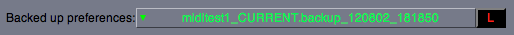
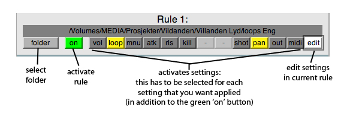
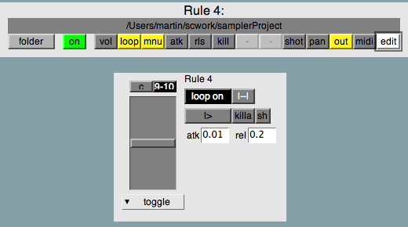

Preferences
Preferences are accessed by clicking the black 'setup' button in the upper right corner of the sampler.
Preferences
Some settings are greyed and cant be changed once the sampler is created - the number of keys, faders and knobs and the name.
You can set up faders and knobs again, and change the lowest key on the keyboard, and change the midi input.
There are some new settings in the preferences:
MIDI channel
Only listen to one MIDI channel, 1-16, or set to 0 to accept MIDI from all channels.
Main Output
This sets the output channel that the key/knob/slider will output on unless an other output channel is set at the key/knob/slider's own setting. If set to nil it will default to the first two channels on the soundcard. If set to anything else the sampler should be smart enough to sense if running on the internal soundcard (which only has stereo out) and play all sounds on those channels temporarily.
Backups
Previously saved presets are saved as backups. To restore one choose them from the menu at the bottom and press the black and red L (load) key. The name of the file is the date and time it was backed up. The backed up preset you load will not be active until you push the Save Preset button and restart.

Folder Specific Rules
This allows you to make soundfiles that come from certain folders to automatically get their own setting.

1. Click folder button to specify which folder you want to carry the rule. You have to select any file in that folder. Files from all folders within this folder will also be subject to the rule.
2. Click the activate settings buttons for the settings you want applied (they turn yellow).
3. Click edit to edit the settings. This brings up a display below like the key-settings display. Edit the settings to how you want them.Â
vol - volume slider
loop - loop on / loop off button
mnu - playback menu, choose from piano, shot and toggle
atk - attack time
rls - release time
kill - "killa" button
- (disabled)
- (disabled)
shot - sh button
pan - panning
out - output button
midi - |--| (work in progress)

Note that for the settings to be applied, they have to be set in the settings display below and activated (yellow) in the activate settings buttons, and lastly:
4. Click the activate rule button, reading off, so that it is green and says on.
5. And offcourse, click Save Preferences in the end to save and restart.
Things to take note of on Folder Specific Rules
Overriding
If you have one rule on a folder, say:
~/sounds/loops/
stored in "Rule 1"
and then another rule on a sub-folder of the same folder, say:
~/sounds/loops/atmos/
stored in "Rule 2"
then the rules in "Rule 2" will overwrite the ones in "Rule 1" if they are applied (yellow).
That is, the rules are checked with number 1 first and number 4 last.
This can be useful if for example you have a folder of speech and you want all speech to have certain settings, but then have folders withing that speech folder which you want to have additional settings, but still keep some of the settings that all speech has.